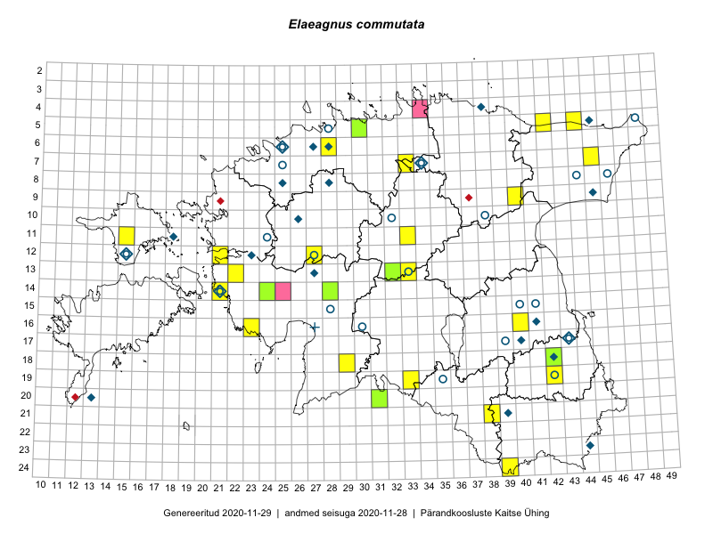

Elaeagnus commutata
Uuendatud: 2016-12-07
Kaardile koondatud taksonid: Elaeagnus commutata Bernh. ex Rydb.

Kaart põhineb 26 vaatlusel. Taime on leitud 18 ruudust.
| Ruut | Vaatleja(d) | Vaatlusaeg | Kirje tüüp | Viide andmebaasikirjele |
|---|---|---|---|---|
| 07-45 | Toomas Kukk, Tiit Hallikma | 2015-06-01 | ruut/ala | vaata PlutoFis |
| 12-21 | Tiit Hallikma, Toomas Kukk | 2015-08-27 | ruut/ala | vaata PlutoFis |
| 21-38 | Eeva-Maria Jeletsky, Tarmo Niitla | 2015-08-12 | punkt | vaata PlutoFis |
| 21-38 | Eeva-Maria Jeletsky, Tarmo Niitla | 2015-08-12 | ruut/ala | vaata PlutoFis |
| 18-42 | Kirsi Loide, Marje Loide | 2015-07-28 | ruut/ala | vaata PlutoFis |
| 19-42 | Kirsi Loide, Marje Loide | 2015-07-29 | ruut/ala | vaata PlutoFis |
| 18-29 | Toomas Kukk, Tiit Hallikma | 2016-06-03 | ruut/ala | vaata PlutoFis |
| 19-33 | Silvia Pihu | 2015-07-10 | ruut/ala | vaata PlutoFis |
| 19-33 | Silvia Pihu, Illi Tarmu | 2016-07-10 | punkt | vaata PlutoFis |
| 24-39 | Liina Oja, Maret Gerz | 2016-06-14 | punkt | vaata PlutoFis |
| 24-39 | Maret Gerz, Liina Oja | 2016-06-14 | ruut/ala | vaata PlutoFis |
| 06-28 | Toomas Kukk | 2016-07-04 | ruut/ala | vaata PlutoFis |
| 06-28 | Toomas Kukk | 2016-07-04 | punkt | vaata PlutoFis |
| 11-33 | Tõnu Ploompuu, Marko Veinbergs, Eerik Leibak | 2016-07-22 | ruut/ala | vaata PlutoFis |
| 11-33 | Tõnu Ploompuu, Marko Veinbergs, Eerik Leibak | 2016-07-22 | punkt | vaata PlutoFis |
| 13-32 | Thea Kull, Raivo Kalle, Susanna Vain | 2016-07-21 | ruut/ala | vaata PlutoFis |
| 11-15 | Thea Kull, Peedu Saar | 2016-08-09 | ruut/ala | vaata PlutoFis |
| 13-22 | Maret Gerz, Aat Sarv | 2016-07-05 | punkt | vaata PlutoFis |
| 13-22 | Aat Sarv, Maret Gerz | 2016-07-05 | ruut/ala | vaata PlutoFis |
| 11-15 | Peedu Saar, Thea Kull | 2016-08-09 | punkt | vaata PlutoFis |
| 16-23 | Timo Luhamäe, Peedu Saar | 2016-07-04 | punkt | vaata PlutoFis |
| 07-33 | Peedu Saar, Toomas Kukk | 2016-09-13 | ruut/ala | vaata PlutoFis |
| 07-33 | Peedu Saar, Toomas Kukk | 2016-09-15 | punkt | vaata PlutoFis |
| 05-42 | Tiit Hallikma, Tõnu Ploompuu | 2016-07-26 | punkt | vaata PlutoFis |
| 12-27 | Jaak-Albert Metsoja, Mari Metsoja | 2016-07-05 | ruut/ala | vaata PlutoFis |
| 20-31 | Mari Metsoja, Meeli Mesipuu | 2016-07-19 | ruut/ala | vaata PlutoFis |